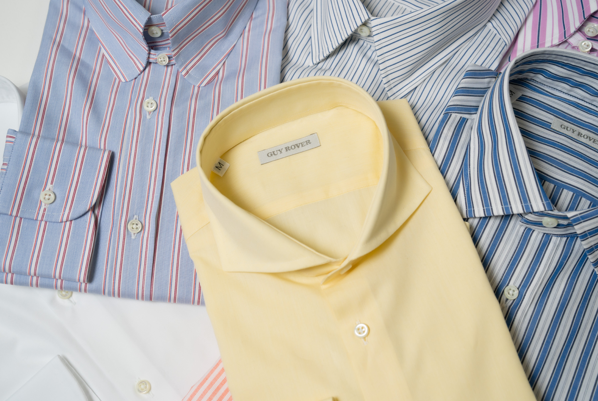
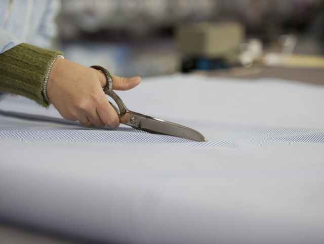
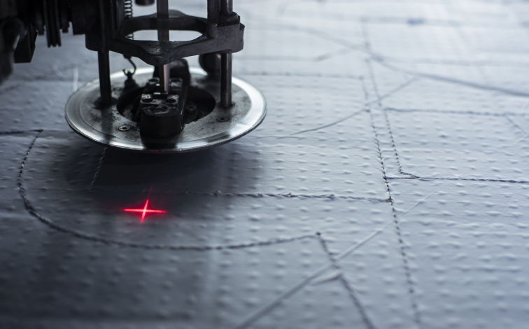
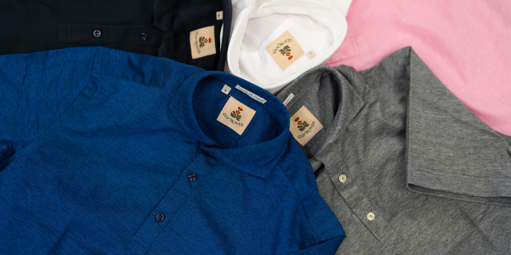
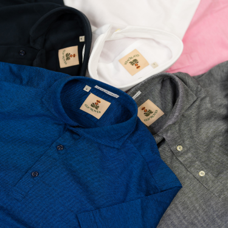

<div class="top_page" fxLayout="column" fxLayoutAlign="start center">
    <div class="top_img"  [@fadeinAnimation]="{value:'hoge',params:{time:'2000ms 300ms'}}" fxLayoutAlign="center start">
        
        
    </div>
    <div class="guyrover_detail_text" [@fadeinAnimation]="{value:'hoge',params:{time:'2000ms 500ms'}}">
        <div class="text_h1">
            イタリアのマシンメイド最高峰シャツブランド
        </div>
        
        <div class="text_blocks" 
            fxLayout="column" 
            fxLayoutAlign="start end"
            fxLayout.xs.mobile="row wrap" 
            fxLayoutAlign.xs.mobile="end end" >
            <div class="text_block">
                GUY ROVER（ギ・ローバー）は、1973年にイタリアのヴィチェンツァにて<br>
                フランチェスコ ラヴェルダが創業したシャツメーカー。
            </div>
            
            <div class="text_block">
                オールマシンメイドによるしっかりとした縫製、<br>
                立体的なデザインに定評のある最高品質のシャツを提供。<br>
                クオリティが高いのにもかかわらず、<br>
                比較的リーズナブルなドレスシャツやカジュアルシャツが愛用者の支持を集めています。
            </div>
            
            <div class="text_block">
                1990年代にはミラノの著名セレクトショップのオリジナルシャツを手掛け、<br>
                その技術力の高さが 評判となり、日本での展開がスタートしました。
            </div>
        </div>
    </div>
    <div class="guyrover_detail_img" >
        <div class="img_blocks"  fxLayout="column" fxLayoutAlign="end end">
            <div class="img_block" style="max-width: 1000px;width: 100%;" fxFlexAlign='center' [@fadeinAnimation]="{value:'hoge',params:{time:'2000ms 700ms'}}">
                
            </div>
            
            <div class="img_block" fxLayout="column" fxLayoutAlign="start end" [@fadeinAnimation]="{value:'hoge',params:{time:'2000ms 900ms'}}">
                
            </div>            
        </div>
    </div>
    <div class="guyrover_detail_text" [@fadeinAnimation]="{value:'hoge',params:{time:'2000ms 1100ms'}}">
        <div class="text_h1">
            安定した品質で支持されるファクトリーブランド
        </div>
        
        <div class="text_blocks" 
             fxLayout="column" 
             fxLayoutAlign="start end" 
             fxLayout.xs.mobile="row wrap"
             fxLayoutGap='24px'>
            <div class="text_block">
                そのオールマシンメイドの安定した技術と、<br>
                洋服専門店への柔軟に対応する姿勢から、<br>
                国内外問わず世界中のバイヤーに愛され、ファッション業界でも強固な信頼を得ており、<br>
                ファクトリーブランドとして有名メゾンのシャツも手掛けていることで知られています。
            </div>
        </div>
    </div>      
    <div class="img_foot" fxLayout="row" fxLayout.xs.mobile="column" fxLayoutAlign="center start" [ngSwitch]="(isMobileSize$|async)" [@fadeinAnimation]="{value:'hoge',params:{time:'2000ms 1200ms'}}">
        
        
    </div>
</div>
    
